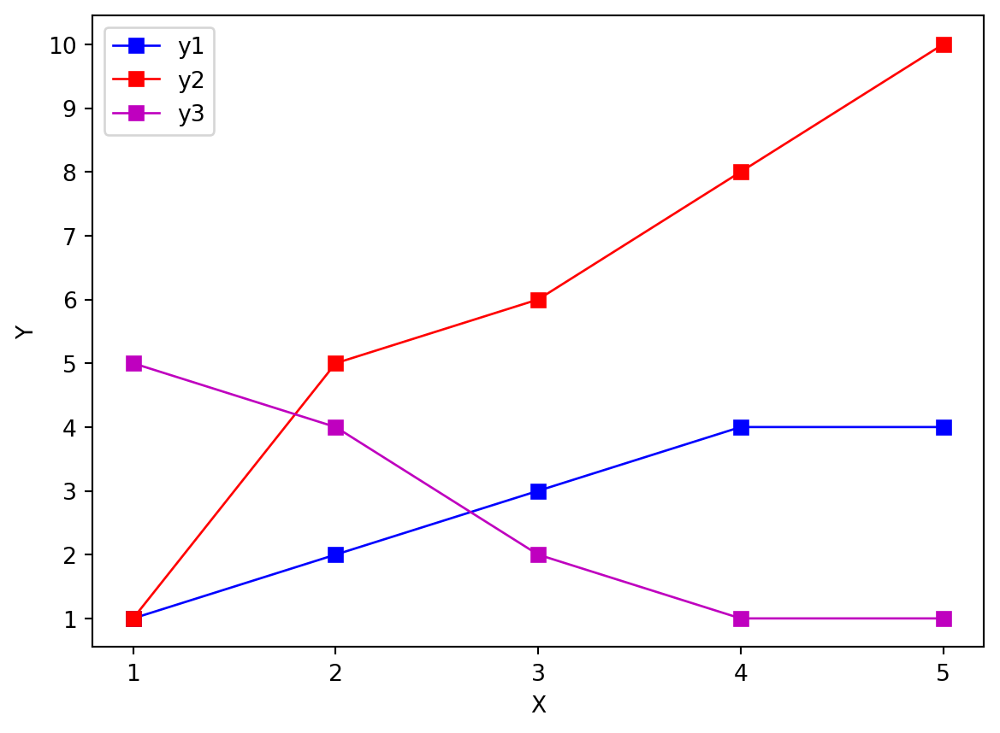
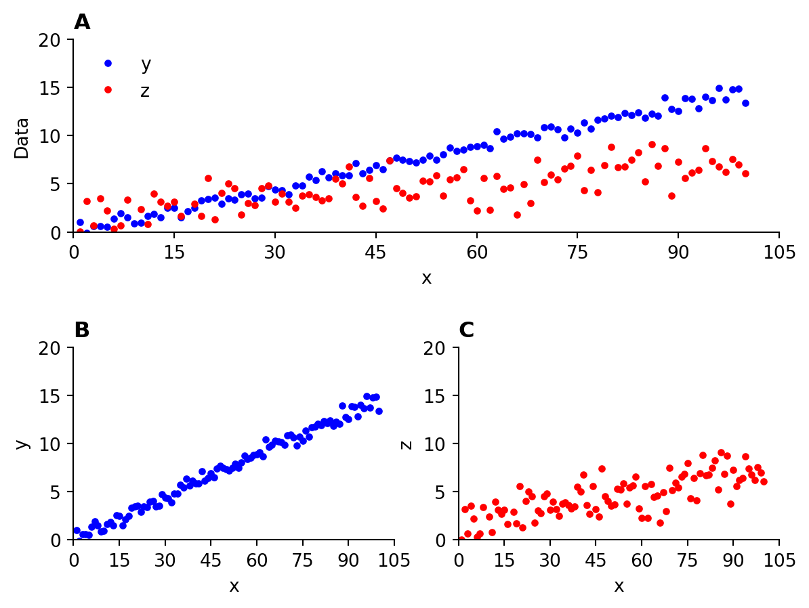

Homework 6
Due: Mar 1 by 11:59 pm eastern standard time
Submit a single file called name_06.py to Brightspace/OWL where name is replaced with your last name, e.g. gribble_06.py
Matplotlib exercises
Define a 1D array
xcontaining 10 values starting at 0, ending at 0.9, in increments of 0.1. Define a vectorythat is equal tonp.sin(2 * np.pi * x). Generate a line plot withxon the horizontal axis andyon the vertical axis. Use blue circles at each data point (markersize of 8.0), connected by blue solid lines, with a linewidth of 2.0. Label the horizontal axisxand the vertical axisy. Set the range on the horizontal axis so it goes from 0 to 0.9 in steps of 0.1, and on the vertical axis so it goes from -1 to 1 in steps of 0.2.Define 1D arrays
y1equal to[1,2,3,4,4],y2equal to[1,5,6,8,10], andy3equal to[5,4,2,1,1]. Generate a multi-line plot using squares (markersize 6.0) connected with solid lines (linewidth 1.0). Label the axes as shown, and set axis limits and axis ticks as shown. Add a legend as shown. They1colour is blue, they2colour is red, and they3colour is magenta.
Define a 100-length 1D array
xstarting at 1 and ending at 100 in increments of 1. Defineyequal to(x * 0.15) + Nwhere N is a 100 element 1D array of random values chosen from a gaussian distribution with mean 0.0 and standard deviation 0.5. Letzbe equal to((x * 0.05) + 2) + N2whereN2is a 100 element 1D array of random values chosen from a gaussian distribution with mean 0.0 and standard deviation 2.0. Generate a scatterplot as shown below, using filled circles (markersize 3.0). Theycolour is blue and thezcolour is red. Pay attention to the axis labels, tick marks, and ranges. At the beginning of your answer set the random seed (once) to be equal to9040so that we all get the same random values, usingnp.random.seed(9040).
Re-plot the data from Question 3 using subplots, as shown below. Try to replicate the axis limits, and axis labeling. Use boldface font to add a title to each subplot (A, B, and C, aligned to the left of each subplot as shown below).
Hint: adjust the
hspaceparameter for subplots so that the subplots don’t overlap, e.g.plt.subplots_adjust(hspace=0.6).Hint:
ax.spines["top"].set_visible(False)will turn off the top part of the box outlining each plot.Hint:
fig = plt.figure()and thenax1 = fig.add_subplot(2,2,(1,2))will generate a subplot that spans cells 1 and 2 (the top row) of the 2x2 grid. Thenax2 = fig.add_subplot(2,2,3)andax3 = fig.add_subplot(2,2,4)will define the lower two sublots.Hint: the
legend()method of an axis has an option that will remove the frame outline:frameon=False
Do your best to replicate all of the elements of the Figure. If you can’t replicate every little part of it don’t worry, but challenge yourself to try to get as close as you can. I will post a sample solution after the deadline.